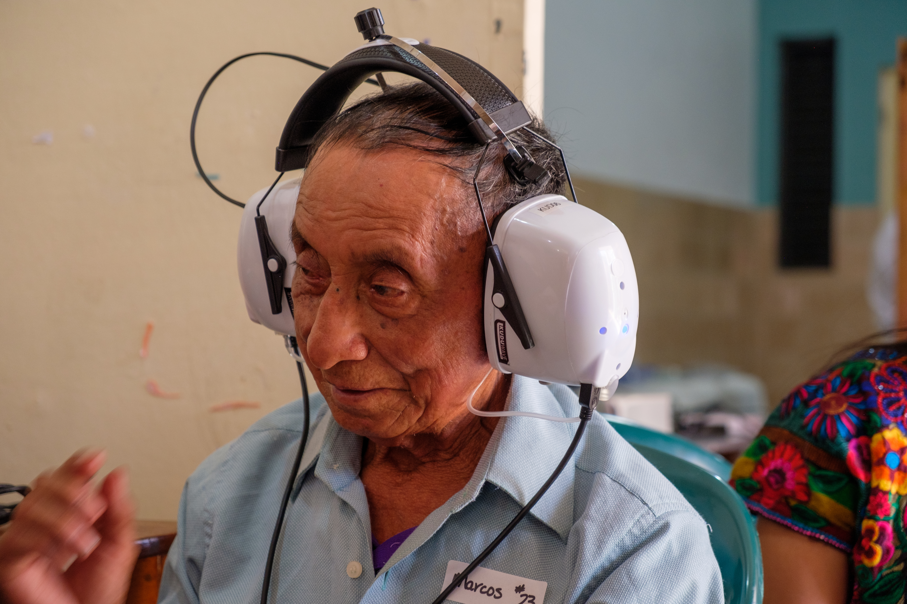
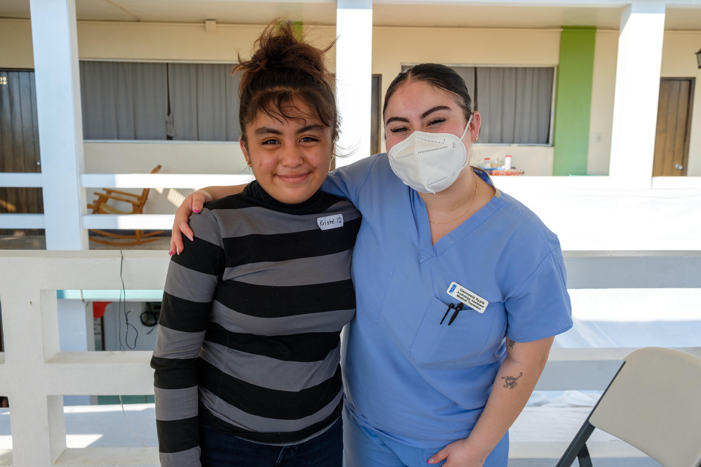
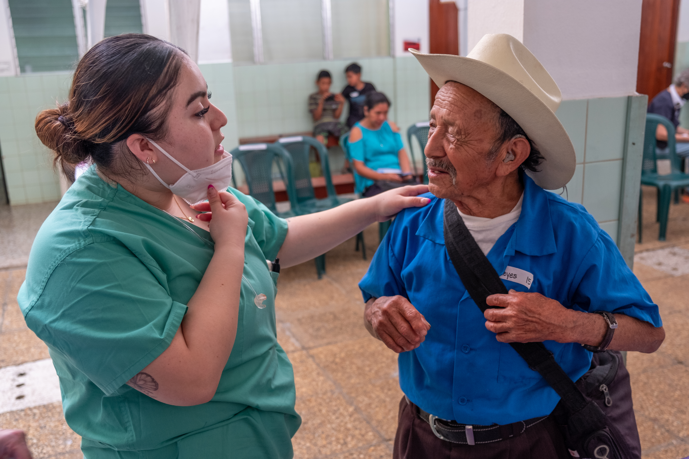
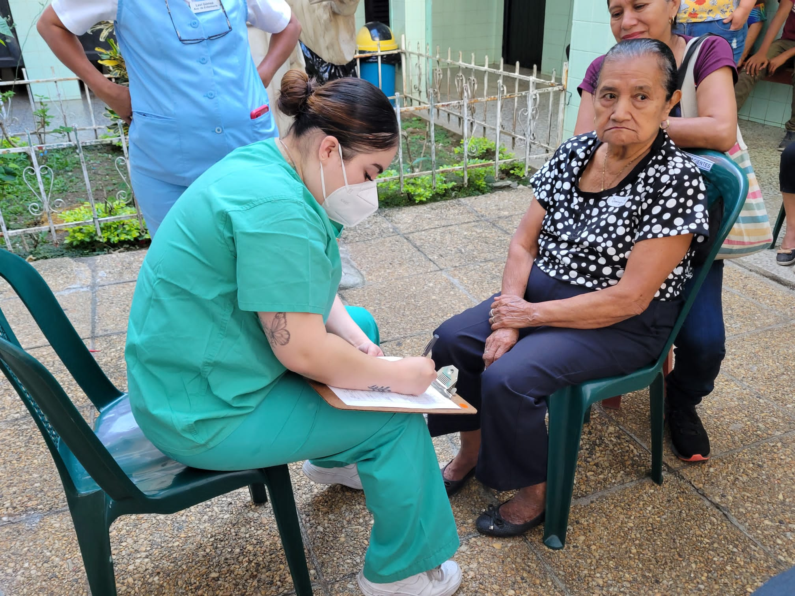

AudiologyMaterialsInSpanish.com
Better Hearing Care Starts With Better Communication
Better Hearing Care Starts With Better Communication
Spanish materials and clinician tools designed to support Hispanic and Latino patients, strengthen understanding, and improve follow-through in hearing healthcare.
Patient handouts
Spanish-language materials designed to support patient understanding at home and in clinic.
Clinician support
Printable tools for audiologists working with Spanish-speaking patients and families.
Print-ready
Open each resource in a new tab, then print or save as needed.
Featured Resources
Browse a collection of Spanish-language patient materials and clinician tools designed to support culturally responsive audiology care.


About
About the project and the authorAbout the Author
My name is Gennesis Ayala, and I am a Doctor of Audiology graduate student at Western Washington University. I am also proud to be part of the Hispanic/Latino community, which has shaped both my personal experiences and my perspective as a future healthcare provider.
Throughout my training in audiology, I have seen how language barriers and cultural differences can affect access to hearing healthcare. Many Spanish-speaking patients face challenges when trying to understand hearing loss, hearing technology, and treatment options when educational materials are primarily available in English.
As someone who comes from this community, I understand how important it is for patients to feel respected, understood, and supported in healthcare settings. My hope is that these materials help clinicians communicate more effectively with Spanish-speaking patients and contribute to more accessible and equitable hearing healthcare.
About the Project
Audiology Materials in Spanish was created as part of my doctoral capstone to support culturally responsive audiology care for Hispanic and Latino communities and Spanish-speaking patients. The goal is to provide Spanish-forward educational materials and clinician tools that help improve communication, understanding, and follow-through in hearing healthcare.
These resources are designed to be practical, easy to use in clinical settings, and adaptable to a variety of patient needs.




Resources
Click a card to preview, open, and printClinician Tools
Printable resources for audiologistsClinician resources for Spanish-speaking patient care
These printable tools are designed for audiologists working with Spanish-speaking patients and families. Click a tool below to preview it, then use Open / Print Resource.
References
Selected references supporting cultural responsiveness, language access, and equitable hearing healthcareReference List
- American Speech-Language-Hearing Association. (n.d.). Collaborating with interpreters, transliterators, and translators. https://www.asha.org/practice-portal/professional-issues/collaborating-with-interpreters/
- American Speech-Language-Hearing Association. (n.d.). Cultural responsiveness. https://www.asha.org/practice-portal/professional-issues/cultural-responsiveness/
- Betancourt, J. R., Green, A. R., Carrillo, J. E., & Ananeh-Firempong, O. (2003). Defining cultural competence: A practical framework for addressing racial and ethnic disparities in health care. Public Health Reports, 118(4), 293-302.
- Centers for Disease Control and Prevention. (2024). Health literacy. https://www.cdc.gov/healthliteracy/
- Flores, G. (2006). Language barriers to health care in the United States. The New England Journal of Medicine, 355(3), 229-231. https://doi.org/10.1056/NEJMp058316
- Institute of Medicine. (2003). Unequal treatment: Confronting racial and ethnic disparities in healthcare. National Academies Press.
- National Institute on Deafness and Other Communication Disorders. (2023). Cochlear implants. https://www.nidcd.nih.gov/health/cochlear-implants
- National Institute on Deafness and Other Communication Disorders. (2023). Hearing aids. https://www.nidcd.nih.gov/health/hearing-aids
- Office of Minority Health. (2018). National standards for culturally and linguistically appropriate services (CLAS) in health and health care. U.S. Department of Health and Human Services. https://thinkculturalhealth.hhs.gov/clas
- Pew Research Center. (2017). Key facts about Latino Americans. https://www.pewresearch.org/
- Suarez-Almazor, M. E., et al. (2014). The impact of culturally tailored patient education on treatment adherence. Patient Education and Counseling, 95(1), 5-13.
- U.S. Census Bureau. (2020). Hispanic population is younger but aging faster than the non-Hispanic population. https://www.census.gov/
- World Health Organization. (2021). World report on hearing. https://www.who.int/publications/i/item/world-report-on-hearing